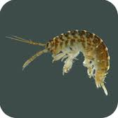

Safeguarding and Protecting Children and Young PeopleTata Steel Sailing Club considers the welfare of young people as being fundamental to our basic principles. As such, Ruth Evans, our trained Officer helps us understand our reponsibilities towards young peopleAny young member of the club or visitor who wishes to talk in confidence can talk to the Welfare Officer if they are unhappy with the behavior of another club member or visitor towards them. To read the clubs Young Persons Welfare Policy click on the button here: Ruth can be contacted by email: welfare@tatasteelsailing.org.uk Please take a few minutes to read our Code of Conduct and a guide on what to do if you believe that you witness inappropriate behaviour at our club Ruth has put together an action plan to improve our practices and procedures Please click on the button below to see the Action Plan:
Health and Safety |
| Click on this link to see the club's risk assessments: |
Environmental | |
|
Please click on this button to see the club's Biosecurity Policy Bio-security warning:Can you take a few precautions to protect the environment?We have a non European shrimp at Eglwys Nunnydd Reservoir -  Dikerogammarus villosus Although completely harmless to humans, it does have a seriously adverse effect on UK freshwater life, eggs etc., in fresh and brackish water.The following measures have been introduced to minimise the likelihood of sailors and windsurfers spreading this creature to other water catchment areas: Before any dinghy sailor or windsurfer takes their craft away from Tata Steel Sailing Club You must not leave any trolley or trailer in the water when launching. You are required to inspect your craft for shrimp and weed etc., and thoroughly wash with the hoses provided. Pay particular attention to washing sails, masts, and other nooks and crannies such as Topper and Laser mast holes, slots on sailboards etc. Trolleys, which have been immersed in the water, need special attention to ensure hollow tubes are flushed through – pay attention to wheels and support cradles. Your craft and trolley needs to be completely drained after washing. PowerboatsVisiting powerboats and trailers need to be similarly cleaned before leaving the site, with special attention to bilges and engine cooling systems, which also need to be flushed through. | This applies to all members and visitorsYour Sailing GearBeen on the water? You must inspect your sailing gear, including wetsuit boots, buoyancy aids, etc., and remove any shrimp. WASH YOUR KIT in the showers before you leave Don’t wash it at home, where the effluent might get down a rain water drain or sewer. This applies even if you can’t see any shrimp, as their young can be very small and hard to spot Dry your sailing clothing - Ensure your gear is dry for at least five days before entering fresh or brackish water elsewhere (Environment Agency). Your TrolleyDon’t leave any trolley or trailer in the water after launching. Taking your dinghy or sailboard home or elsewhere?Before you leave the site turn the hose taps on full blast and hose down your craft to remove shrimp, weed, mud, and gravel; pay particular attention to washing masts, and other nooks and crannies such as Topper and Laser mast holes – tip your craft on its side. Trolleys – ensure hollow tubes are flushed through, and pay attention to wheels and dinghy supports. Your craft and trolley needs to be completely drained after washing. Take care of the Sprayguns and HosesAfter use, switch off the taps and hang the spray guns from the taps. At the close of play, the hoses are best left laid out on the gravel to the front of the clubhouse; store the spray guns in the office. If its frosty, please switch the water off from inside the clubhouse lounge, open the taps, and drain the hoses.
|